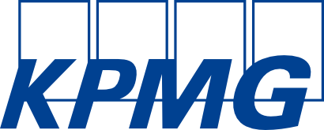
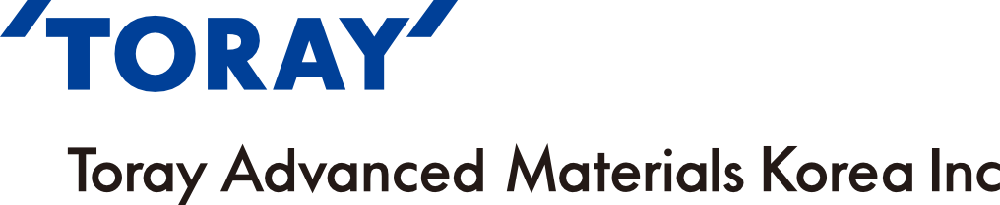
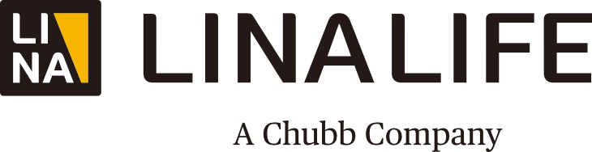

in Story & News
Member Companies
Headline
Hanjin Group

VISION 2045 Unveiled in Celebration of 80th Anniversary Advancing Toward the Next 100 Years
In October, Hanjin Group celebrated its 80th anniversary with a commemorative event reflecting on its achievements and outlining its future vision. Founded in 1945 as Hanjin Trading Company, the Group has played a central role in the development of Korea’s logistics industry. Guided by its founding philosophy of “contributing to the community through transportation,” Hanjin has grown into a global leader in aviation and logistics.
At the ceremony, Walter Cho, Chairman and CEO of Hanjin Group, expressed his gratitude, emphasizing that the trust of customers and employee dedication have been the driving forces behind the Group’s growth.
On the same occasion, Emily Cho, President and CMO of Hanjin Logistics Corporation, announced the Group’s vision, “Moving the World to a Better Future,” along with its long-term roadmap, “VISION 2045.” The vision outlines seven key strategic priorities: evolve into an integrated mobility solutions provider across aerospace, future mobility and e-commerce; lead lo- gistics technology innovation through AI-based Hyper-Autonomous Logi-Tech; build sustainable space logistics solutions leveraging expertise in defense and space launch technologies; deliver a premier transport and logistics experience through digital transformation powered by advanced IT and AI; create new value across tourism, hospitality, and real estate through aviation-logistics synergy; expand investment in talent development to cultivate global logistics experts; advance ESG leadership through Creating Shared Value (CSV) and community initiatives for sustainable growth. Together, these pillars aim to position Hanjin Group as a leading global integrated logistics group.
Rather than a one-time celebration, the anniversary event focused on conveying appreciation to employees and customers. Hanjin Group reaffirmed its belief that the essence of transportation lies connecting people, and pledged to continue growing alongside society as a global logistics group admired worldwide in the years ahead.
Kia

Kia’s 80-Year Journey of Challenge and Determination History Revisited, Future Vision Revealed
Kia marked its 80th anniversary with a commemorative event attended by approximately 400 employees and distinguished guests, unveiling both a comprehensive corporate history volume titled Kia: 80 Years and its future concept car, Vision Meta Turismo.
Kia: 80 Years is the first official company history published since Kia joined Hyundai Motor Group. The book retraces eight decades of the company’s journey, from its founding as Kyungsung Precision Industry in 1944 to the eras of three-wheeled vehicles, passenger cars, and today’s electric vehicles and PBVs. The narrative is framed around the spirit of taking on challenges and perseverance that has defined Kia’s evolution. It also highlights the management philosophies of successive leaders, including founder Cheol-ho Kim’s commitment to technological nation building, Honorary Chairman Mong-koo Chung’s focus on quality and global management, and Chairman Eui-sun Chung’s emphasis on design-driven innovation.
Kia also revealed its next generation concept car, Vision Meta Turismo, which presents the brand’s vision for future mobility. The model offers an immersive driving experience through AR HUD based modes such as Speedster, Dreamer, and Gamer, reflecting Kia’s direction toward future mobility experiences where technology and emotion are closely integrated.
An exhibition titled The Legacy of Movement was held alongside the event, offering a concise view of Kia’s history. Seventeen vehicles were on display, ranging from Korea’s first domestically produced bicycle, the Samchuly Bicycle to iconic auto models such as the Sportage and Carnival. The exhibition was organized into eight thematic zones, visually tracing Kia’s journey from its founding spirit to its global expansion. The exhibition will remain open through 2029, with special programs for the general public to be introduced in the future.
To further commemorate its 80th anniversary, Kia has launched a heritage asset discovery and collection campaign titled Kia Treasure Hunt: In Search of 80 Years of Legacy.
Kia plans to release archival materials covering its 80-year history and vehicle lineup through an online platform called Movement Archive. In addition, a video campaign titled The Portraits of Kia will be rolled out, reinterpreting the brand’s journey through the perspectives of diverse individuals.
Samjong KPMG

Data Center Advisory Center Launched for Real Estate, Infrastructure, and Tax Consulting
Samjong KPMG has officially launched its Data Center Advisory Center that brings together the firm’s real estate, infrastructure, and tax advisory capabilities. This is a response to the rapidly growing demand for data centers driven by the expansion of cloud services and artificial intelligence.
The center provides an all-in-one advisory service covering real estate site selection and feasibility analysis, financial advisory tailored for power and energy infrastructure, and optimization of investment and tax structures. Drawing on its advisory experience in more than 90% of domestic data center projects, as well as its track record in overseas assignments, Samjong KPMG offers tailored investment structure design for a wide range of models, including colocation, hyperscale, AI-focused, and overseas expansion projects. Through this integrated advisory approach, the Data Center Advisory Center aims to establish itself as a one-stop platform that delivers all essential expertise required for data center investment and operations.
Samyang Foods

“Samyang 1963” Marks Samyang’s First Beef-Tallow Ramen in 36 Years
Samyang Foods unveiled its new premium ramen product, Samyang 1963, at voco Seoul Myeongdong in Jung-gu, Seoul, in November, while also presenting its next generation ramen strategy that reinterprets the original Samyang Ramen recipe through a modern lens. The launch was especially meaningful as it coincided with the 36th anniversary of the lard incident, underscoring the company’s commitment to preserving brand authenticity and its philosophy of “true taste.”
Samyang 1963 features beef tallow, once a core ingredient in the original Samyang Ramen, to enhance the richness of the noodles and the depth of the broth. The noodles are fried in a “golden blend oil” combining animal-based beef tallow and plant-based palm oil to elevate flavor, additional ingredients include beef bone broth, radish, green onion, and Cheongyang chili pepper to deliver a spicy yet clean finish. Jung-soo Kim, Vice Chairman of Samyang Foods, stated that while the company has grown into a global food enterprise sharing Korean culinary culture with the world, it is now embarking on another chapter of innovation.
Hanmi Semiconductor

Micron’s Top Supplier Award Conferred
Hanmi Semiconductor announced that it has received the “Top SupplierAward” from U.S. semiconductor company Micron Technology. Micron hosts its Supplier Awards annually, recognizing global partners that demonstrate outstanding performance across quality, technological innovation, service, and core capabilities categories. This award highlights Hanmi Semiconductor’s world class technology and quality in the global semiconductor equipment market. Since 2002, the company has filed more than 130 patents related to high bandwidth memory, steadily strengthening its technological competitiveness. This year, Hanmi Semiconductor proactively launched the “TC Bonder 4,” designed to support mass production of HBM4. Driven by rapid growth in the AI semiconductor market, Micron has recently posted record breaking performance and achieved new highs in market capitalization, with Hanmi Semiconductor’s equipment playing a critical role in Micron’s expansion of HBM production. Looking ahead, Hanmi Semiconductor plans to further strengthen its position within the global semiconductor supply chain by continuing to deliver advanced equipment and services.
Toray Advanced Materials Korea

PPS Resin Expansion Secures Korea’s Largest Annual Production Capacity
Toray Advanced Materials Korea completed the expansion of its second polyphenylene sulfide (PPS) production line with an annual capacity of 5,000 tons at its Gunsan plant in the Saemangeum Industrial Complex, Jeollabuk-do, and held a completion ceremony. Following the establishment in 2016 of the world’s first fully integrated production system covering raw materials, resin, and compounding, the company has now secured Korea’s largest PPS production capacity, totaling 13,600 tons per year.
Amid continued growth in the global high-performance materials market in recent years, Toray Advanced Materials Korea plans to respond to rising demand in the automotive, electrical and electronics, and industrial sectors while strengthening its presence in domestic and global markets by developing new applications and optimized solutions. In addition, the company expanded its annual production capacity of sodium hydrosulfide, the main raw material for PPS resin, to 4,800 tons, enhancing both productivity and cost competitiveness. Young-seop Kim, President of Toray Advanced Materials Korea, stated that the company will contribute to the development of related industries and regional economic vitality through its accumulated technological expertise and Korea’s largest supply capacity.
Lina Life Insurance

Second Brand Campaign Promotes Zero-Document Claims
Lina Life Insurance has rolled out the second phase of its brand advertising campaign. This iteration focuses on “Zero-Document Claims Service,” which allows insurance claims to be submitted automatically without the need for physical documentation. The campaign highlights the convenience of a paperless claims process, which benefits both customers and medical institutions, emphasizing that digital innovation has simplified the insurance claims experience.
Actor Ji-hoon Ju once again appears in the campaign. The video is available through online channels, and the first campaign released in September received positive responses for its witty and creative storytelling, recording 9.6 million views as of November. Under the slogan “Spotlight on YOU,” Lina Life Insurance stated that it will continue to pursue customer-focused service innovations that provides tailored experiences for each customer.
Samyang Holdings


Samyang Biopharm Officially Launched as Dedicated Biopharmaceutical Company
Samyang Holdings, the holding company of the Samyang Group, officially launched a new subsidiary, Samyang Biopharm, following the spin-off of its pharmaceutical and biotechnology business through a demerger. The move is aimed at enabling the pharmaceutical and biotechnology business to be evaluated independently by the market and at strengthening its ability to respond proactively to the rapidly changing industry environment through a specialized management structure.
Kyung-jin Kim, Co-CEO of Samyang Holdings and head of the pharmaceutical and biotechnology business, was appointed CEO of Samyang Biopharm. The new company plans to strengthen its specialty focused portfolio, including in biodegradable surgical sutures, gene delivery systems, and anticancer drugs. It will also expand industry-academia research collaborations and global partnerships to enhance competitiveness in the pharmaceutical and biotechnology sectors.In addition, Samyang Biopharm aims to establish a leading position in the global gene therapy market through the commercialization of its gene delivery platform. Meanwhile, it will distinguish the holding company from the operating business to offer investors greater investment flexibility.
Poongsan


K-Defense Technologies Promoted at Major Global Defense Shows
Poongsan highlighted its extended range 155 ㎜ artillery ammunition and discussed potential cooperation on new weapons systems, signaling its intention to expand in the European market.
Poongsan also took part in the Association of the United States Army Annual Meeting and Exposition (AUSA) 2025 in Washington, D.C., where it showcased advanced ammunition products including small, medium, and large caliber rounds as well as fuzes. At the Seoul International Aerospace and Defense Exhibition (ADEX) 2025, held at KINTEX in Goyang, the company exhibited a wide range of defense systems, including the MCD-7 multipurpose combat drone, the MUF-I fixed wing combat drone, armor piercing ammunition, and precision fuzes. Through its continued participation in global defense exhibitions, Poongsan has strengthened cooperation with overseas partners and expanded export opportunities for K-Defense products such as ammunition and drones, further reinforcing its position in the international defense market.